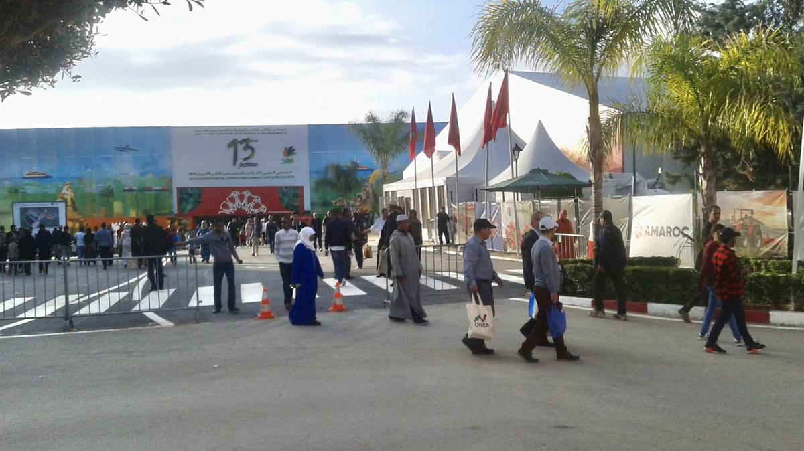

Expos · Expos
SIAM 2027
- Dates
- –
- Venue
- Salon International d'Agriculture showgrounds, Meknès
- Location
- Meknès, Morocco
- Format
- In-person
- Category
- Expos
- Industry
- International agriculture show
- Organiser
- Ministry of Agriculture, Maritime Fisheries and Food Sovereignty; Association of the International Agriculture Show in Morocco; General Commissariat
- Official website
- https://salon-agriculture.ma/en/dates-du-salon/
About
Dates are local to the host city. Official dates-du-salon page: 19–27 April 2027 in Meknès, 19th edition, daily 09:00–18:00. Official access: trade-only Monday 19 April (after the inauguration), Tuesday 20 and Wednesday 21 April with a professional badge; mixed public Thursday 22–Tuesday 27 April with an e-ticket or on-site ticket. Ticket prices were not listed on the dates page fetched. Not the Paris Salon International de l'Agriculture (salon-international-agriculture-2027 already in the Atlas).
Topics: agriculture, livestock, agribusiness, food.